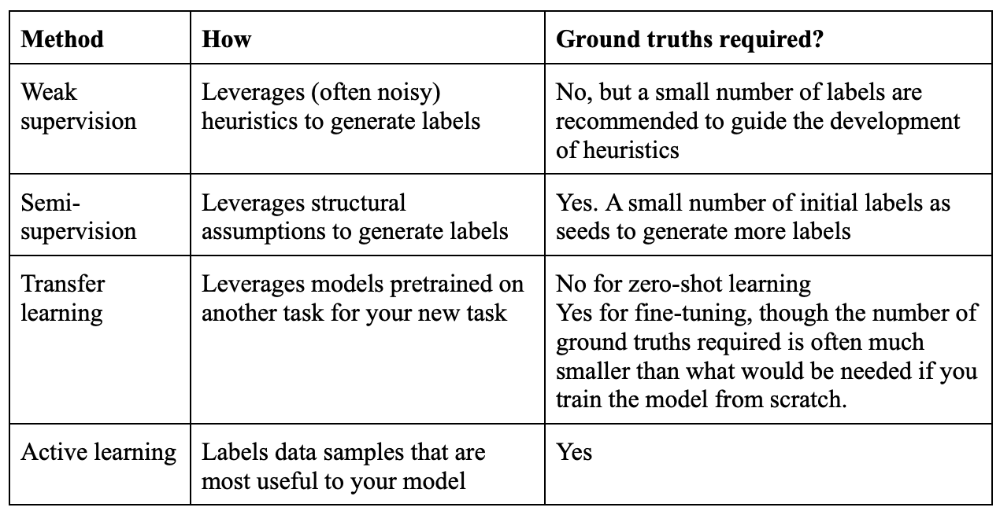
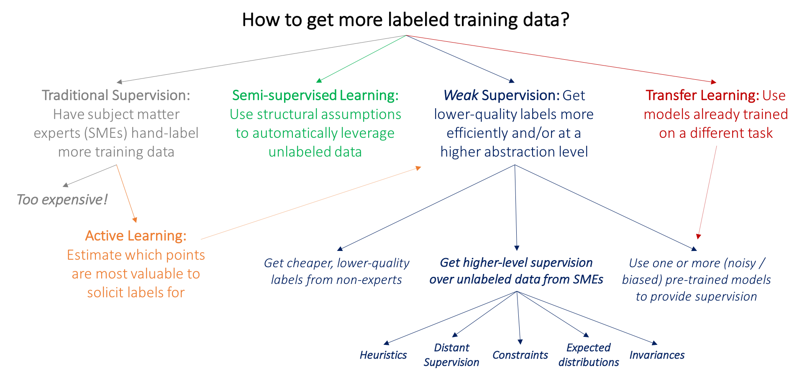
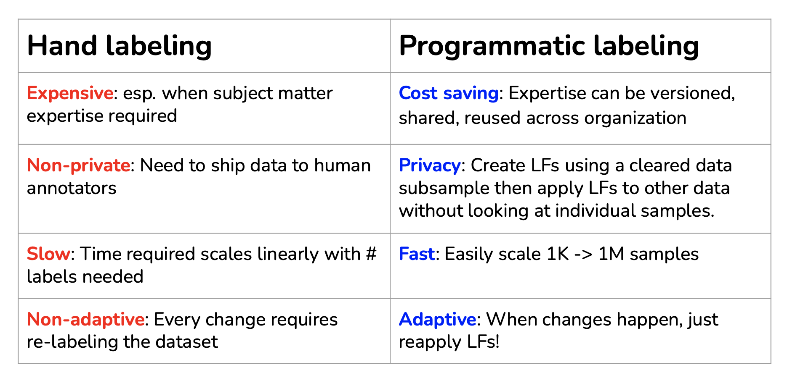
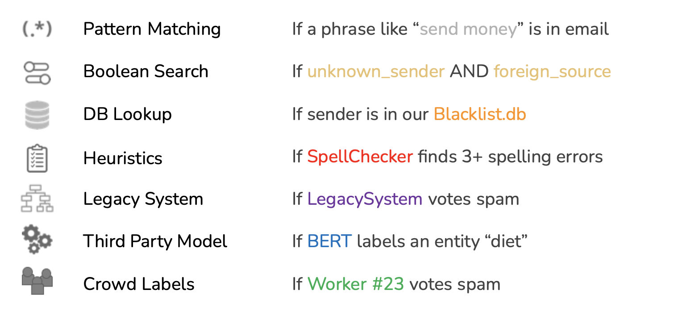
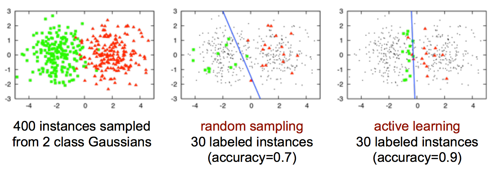

Introduction
More data leads to better predictions.
Data Biais
- Sampling/selection biases
- Under/over-representation of subgroups
- Human biases embedded in historical data
- Labeling biases
Sampling
Sampling is an integral part of the ML workflow. Sampling happens in many steps of an ML project lifecycle, such as sampling from all possible real-world data to create training data, sampling from a given dataset to create splits for training, validation, and testing, or sampling from all possible events that happen within your ML system for monitoring purposes.
See Cross validation for some sampling methods.
Here is a list of sampling methods:
Non-Probability sampling
- Convenience sampling: samples of data are selected based on their availability,
- Snowball sampling: future samples are selected based on existing samples. For example, to scrape legitimate Twitter accounts without having access to Twitter databases, you start with a small number of accounts then you scrape all the accounts in their following, and so on,
- Judgment sampling: experts decide what samples to include,
- Quota sampling: you select samples based on quotas for certain slices of data without any randomization. For example, when doing a survey, you might want 100 responses from each of the age groups: under 30 years old, between 30 and 60 years old, above 50 years old, regardless of the actual age distribution in the real world.
Probability sampling:
- Simple Random Sampling: in the simplest form of random sampling, you give all samples in the population equal probabilities of being selected,
- Stratified Sampling: to avoid the drawback of simple random sampling listed above, you can first divide your population into the groups that you care about and sample from each group separately. For example, to sample 1% of data that has two classes A and B, you can sample 1% of class A and 1% of class B,
- Weighted Sampling: in weighted sampling, each sample is given a weight, which determines the probability of it being selected,
- Importance Sampling: it is one of the most important sampling methods, not just in ML. It allows us to sample from a distribution when we only have access to another distribution,
- Reservoir sampling: an algorithm that is especially useful when you have to deal with continually incoming data, which is usually what you have in production.
Labeling
Getting labels and accurate labels is mandatory to train an ML model.
Labeling mutliplicity
Labellers can’t agree on the label.
Solutions:
- Clear problem definition,
- Annotation training,
- Data lineage: track where data/labels come from (for example, if our model fails mostly on the recently acquired data samples, you might want to look into how the new data was acquired),
- Learning methods with noisy labels:
- Learning with Noisy Labels (Natarajan et al., 2013),
- Loss factorization, weakly supervised learning and label noise robustness (Patrini et al., 2016),
- Cost-Sensitive Learning with Noisy Labels (Natarajan et al., 2018),
- Confident Learning: Estimating Uncertainty in Dataset Labels (Northcutt et al., 2019).
Handling the Lack of Hand Labels
Because of the challenges in acquiring sufficient high-quality labels, many techniques have been developed to address the problems that result.:

Here is a decision trees showing how to get more labeled data:

Weak Supervision: Programmatic labeling
The insight behind weak supervision is that people rely on heuristics, which can be developed with subject matter expertise, to label data. One of the most popular open-source tools for weak supervision is Snorkel.
Programmatic labeling is a good solution to get more labels:

Programmatic labeling can be performed through labeling functions. Here are some examples of labeling functions:

However, labeling functions are:
- Noisy: Unknown, inaccurate,
- Overlapping: LFs may be correlated,
- Conflicting: different LFs give different labels,
- Narrow: Don’t generalize well.
Semi-supervision
If weak supervision leverages heuristics to obtain noisy labels, semi-supervision leverages structural assumptions to generate new labels based on a small set of initial labels. Unlike weak supervision, semi-supervision requires an initial set of labels.
Examples of semi-supervision methods
Self-training:
- A classic semi-supervision method is self-training. You start by training a model on your existing set of labeled data, and use this model to make predictions for unlabeled samples. Assuming that predictions with high raw probability scores are correct, you add the labels predicted with high probability to your training set, and train a new model on this expanded training set. This goes on until you’re happy with your model performance.
Structural assumption:
- Another semi-supervision method assumes that data samples that share similar characteristics share the same labels. The similarity might be obvious, such as in the task of classifying the topic of Twitter hashtags as follows. You can start by labeling the hashtag “#AI” as Computer Science. Assuming that hashtags that appear in the same tweet or profile are likely about the same topic, given the profile of MIT CSAIL below, you can also label the hashtags “#ML” and “#BigData” as Computer Science.
Perturbation-based methods:
- Add white noises to images,
- Add small values to word embeddings
Transfer Learning
Transfer learning refers to the family of methods where a model developed for a task is reused as the starting point for a model on a second task. It is closely linked to fine tuning.
It is widely used in:
- Compute vision where CNN are trained on large amount of data to recognize some objects or animals and are then fine tuned on small amount of data to recognize new objects,
- NLP where models are trained on large unlabeled dataset with task such as predict the next word of a sentence and are then fine tuned on more specific tasks.
Active learning
Active learning is a method for improving the efficiency of data labels. The hope here is that ML models can achieve greater accuracy with fewer training labels if they can choose which data samples to learn from. Active learning is sometimes called query learning — though this term is getting increasingly unpopular — because a model (active learner) sends back queries in the form of unlabeled samples to be labeled by annotators (usually humans).

Resources
See: